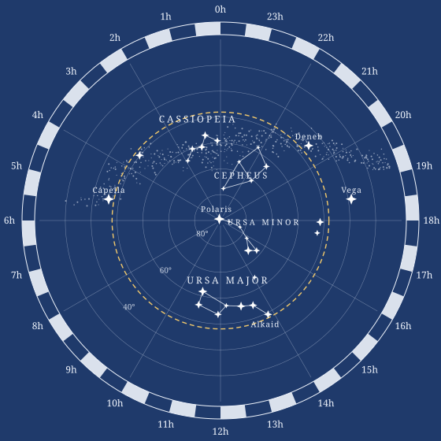

| δ | 38.8° |
| H | −68.7° |
| a | 39.0° |
You spin me right round, baby, right round
Every prediction on this site starts from one picture: the sky as a sphere turning about an axis. By the end of this page you can say, for any star and any place on Earth, whether the star rises, how high it climbs, and how long it stays up.
Watch the sky for a night. Every star rises in the east, climbs to its highest point due south (for a northern observer), and sets in the west. The paths are circles, all parallel to each other, and the stars keep their distances from one another as they turn.

The northern sky seen looking straight up at the celestial pole. Every star turns about the centre once in 23 h 56 min.
Dashed circle: declination 48.1°, that is 90° − φ for Rome. Stars inside it never set there.
Ptolemy names the observation behind this picture: “the revolution of the ever-visible stars, which was observed to be circular, and always taking place about one centre, the same [for all].” That centre is the celestial pole.
Two numbers describe the motion. A star comes back to the same place after 23 h 56 min 04 s of clock time, about four minutes short of a day. And the pole stands above the north point of the horizon at an altitude equal to the observer’s latitude φ: 31.2° at Alexandria, 41.9° at Rome, 51.5° in London.
| δ | 38.8° |
| H | −68.7° |
| a | 39.0° |
A star crosses the meridian at (cos δ, 0, sin δ). Let H be the angle the sky has turned since then, the hour angle. Then
The z component never changes: every star moves on a circle parallel to the equator, as observed. (On the site this equation is typeset with KaTeX.)